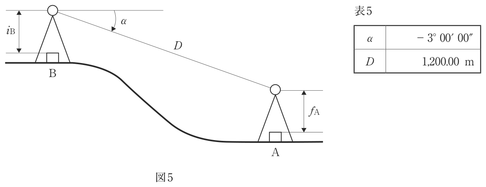
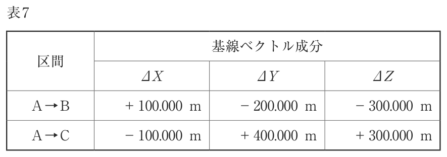
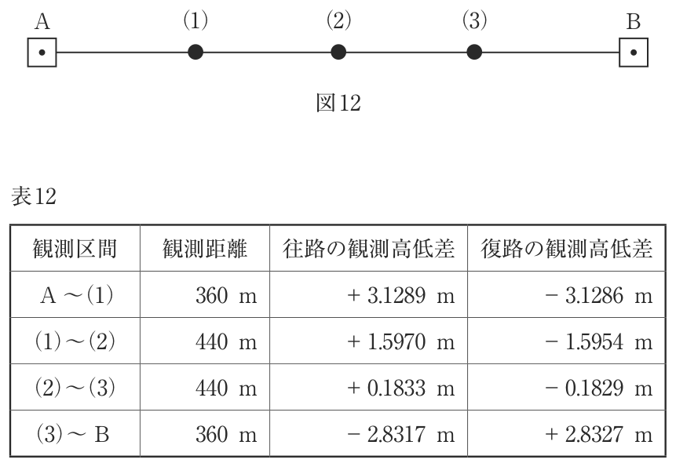
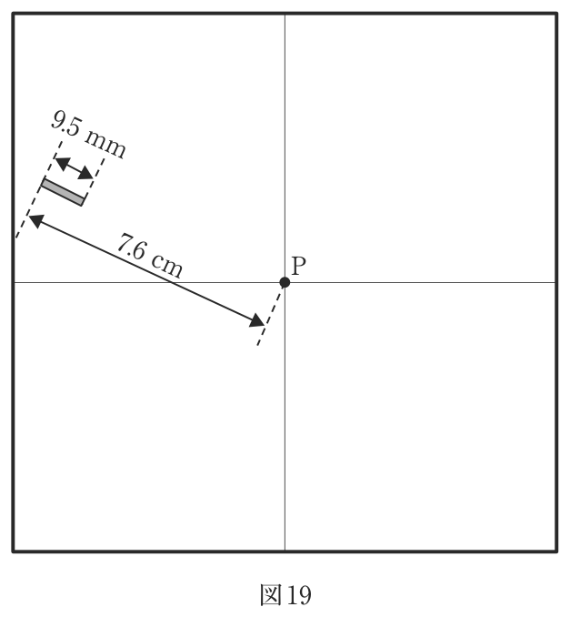
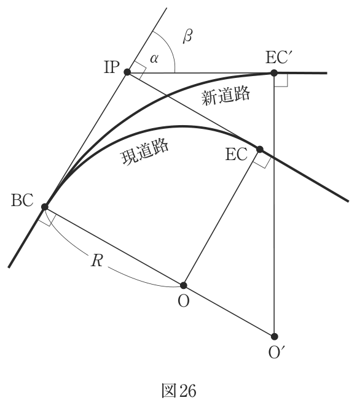
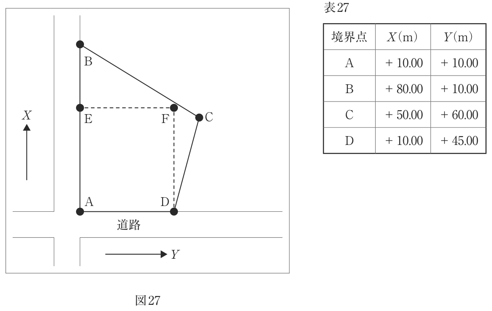

平成28年度（H28）計算問題
測量士補試験の計算問題 8 問。紙と鉛筆で解いてから「答えと解説」を開いてください。関数の値は試験の巻末の関数表を使います。
No.5多角
図5のとおり，新点Aの標高を求めるため，既知点Bから新点Aに対して高低角α及び斜距離Dの観測を行い，表5の結果を得た。新点Aの標高は幾らか。最も近いものを次の中から選べ。
ただし，既知点Bの器械高iBは1.50 m，新点Aの目標高fAは1.70 m，既知点Bの標高は250.00 m，両差は0.10 mとする。また，斜距離Dは気象補正，器械定数補正及び反射鏡定数補正が行われているものとする。
なお，関数の値が必要な場合は，巻末の関数表を使用すること。

- 186.89 m
- 186.99 m
- 187.09 m
- 187.19 m
- 187.29 m
答えと解説
答え 3
B の標高から順に積み上げます。B の器械の高さ 1.50 m だけ上がり、そこから視準線（見通す線）に沿って下がり、最後に A で目標の高さ 1.70 m だけ下がると、A の標高です。高低角 α がマイナスなのは、水平より下を向いているからです。D は斜距離なので、下がる高さは D × sin 3° です。
両差は、地球の丸みと光の曲がりによる高さのずれを合わせた量です。地球は丸いので、遠くの点は実際より低く見えます（光の曲がりは逆向きですが、少し打ち消すだけです）。だから既知点から新点を観測したときは、両差を足します。
＝ 250.00 ＋ 1.50 − 62.81 − 1.70 ＋ 0.10 ＝ 187.09 m
No.7GNSS
GNSS測量機を用いた基準点測量を行い，基線解析により基準点Aから基準点B，基準点Aから基準点Cまでの基線ベクトルを得た。表7は，地心直交座標系におけるX軸，Y軸，Z軸方向について，それぞれの基線ベクトル成分（ΔX，ΔY，ΔZ）を示したものである。基準点Bから基準点Cまでの基線ベクトル成分を求めたとき，基線ベクトル成分の符号の組合せとして正しいものはどれか。次の中から選べ。
ただし，±0.000の符号は，＋（プラス）とする。

- ΔXの符号=＋／ΔYの符号=＋／ΔZの符号=＋
- ΔXの符号=＋／ΔYの符号=＋／ΔZの符号=－
- ΔXの符号=＋／ΔYの符号=－／ΔZの符号=＋
- ΔXの符号=＋／ΔYの符号=－／ΔZの符号=－
- ΔXの符号=－／ΔYの符号=＋／ΔZの符号=＋
答えと解説
答え 5
基線ベクトルは「ある点から別の点まで、X・Y・Z 方向にどれだけ動くか」を表した数です。B→A は A→B の符号を全部逆にしたものなので、B→C ＝ (A→C) − (A→B) です。
ΔY ＝ 400 − (−200) ＝ 600 m → ＋
ΔZ ＝ 300 − (−300) ＝ 600 m → ＋
No.12水準
図12は，水準点Aから固定点（1），（2）及び（3）を経由する水準点Bまでの路線を示したものである。この路線で公共測量における水準測量を行い，表12に示す観測結果を得た。最も再測が必要な観測区間はどれか。次の中から選べ。
ただし，往復観測値の較差の許容範囲は，Sを観測距離（片道，km単位）としたとき，2.5 mm√Sとする。
なお，関数の値が必要な場合は，巻末の関数表を使用すること。

- A～（1）
- （1）～（2）
- （2）～（3）
- （3）～B
- 再測の必要はない
答えと解説
答え 2
較差は、行き（往路）と帰り（復路）で測った高低差の食いちがいです。帰りは符号が逆になるので、往路と復路を足したものが較差になります。
(1)～(2) 1.5970 − 1.5954 ＝ 0.0016 m ＝ 1.6 mm
(2)～(3) 0.1833 − 0.1829 ＝ 0.0004 m ＝ 0.4 mm
(3)～B −2.8317 ＋ 2.8327 ＝ 0.0010 m ＝ 1.0 mm
許容範囲 2.5√S と比べます。√ を出さなくても、「較差 ÷ 2.5」を 2 乗して S（km）と比べれば同じことです。
(1)～(2) 1.6 ÷ 2.5 ＝ 0.64 0.64² ≒ 0.41 ＜ 0.44
(2)～(3) 0.4 ÷ 2.5 ＝ 0.16 0.16² ≒ 0.03 ＜ 0.44
(3)～B 1.0 ÷ 2.5 ＝ 0.40 0.40² ＝ 0.16 ＜ 0.36
どの区間も許容範囲の中です。でも、これで終わりではありません。水準点 A から水準点 B までの全体でも確かめます。
全体の較差 ＝ 0.3 ＋ 1.6 ＋ 0.4 ＋ 1.0 ＝ 3.3 mm
3.3 ÷ 2.5 ＝ 1.32 1.32² ≒ 1.74 ＞ 1.6 → 許容範囲を超える
全体が超えているので測り直しが要ります。較差がいちばん大きい (1)～(2) の 1.6 mm が、全体を超えさせている一番の原因なので、ここを再測します。
No.13地形
トータルステーション（以下「TS」という。）を用いた縮尺1/1,000の地形図作成において，標高110 mの基準点から，ある道路上の点Aの観測を行ったところ，高低角－30°，斜距離24 mの結果が得られた。その後，点AにTSを設置し，点Aと同じ道路上にある点Bを観測したところ，点Bの標高66 m，点A，B間の水平距離96 mの結果が得られた。
このとき，点Aと点Bを結ぶ道路とこれを横断する標高90 mの等高線との交点は，この地形図上で点Bから何cmの地点か。最も近いものを次の中から選べ。
ただし，点Aと点Bを結ぶ道路は傾斜が一定でまっすぐな道路とする。
なお，関数の値が必要な場合は，巻末の関数表を使用すること。
- 4.8 cm
- 6.4 cm
- 7.2 cm
- 8.0 cm
- 9.6 cm
答えと解説
答え 3
まず A の標高。基準点から高低角 −30°（下向き）に斜距離 24 m なので、下がった高さは 24 × sin 30°。
A の標高 ＝ 110 − 12 ＝ 98 m
A と B を結ぶ道路は傾きが一定なので、水平距離は標高の差に比例します。B から 90 m の等高線までの標高差と、B から A までの標高差の比を使います。
＝ 96 × 24 ÷ 32 ＝ 72 m
縮尺 1/1,000 では、実際の 1 m が地図上の 1 mm なので、72 m は 72 mm ＝ 7.2 cm。
No.16写真
画面距離9 cm，撮像面での素子寸法6 μmのデジタル航空カメラを用いた数値写真の撮影計画を作成した。撮影基準面での地上画素寸法を15 cmとした場合，撮影高度は幾らか。最も近いものを次の中から選べ。
ただし，撮影基準面の標高は0 mとする。
- 1,750 m
- 1,900 m
- 2,100 m
- 2,250 m
- 2,350 m
答えと解説
答え 4
図の 2 つの三角形（レンズの上と下）は相似なので、「素子の大きさ ： 画面距離 ＝ 地上の大きさ ： 撮影基準面からカメラまでの高さ H」です。画面距離は、レンズから撮像面までの長さ。撮影基準面の標高は 0 m なので、H がそのまま撮影高度です。単位を m にそろえます。
H ＝ 0.09 × 0.15 ÷ 0.000006 ＝ 0.0135 ÷ 0.000006 ＝ 2,250 m
No.19写真
図19のように，航空カメラを用いて，1,800 mの高度から撮影した鉛直空中写真に，鉛直に立っている直線状の高塔が長さ9.5 mmで写っていた。この高塔の先端は，主点Pから7.6 cm離れた位置に写っていた。この高塔の立っている地表面の標高を0 mとした場合，高塔の高さは幾らか。最も近いものを次の中から選べ。

- 53 m
- 136 m
- 178 m
- 225 m
- 271 m
答えと解説
答え 4
高塔は真上から見ていないので、写真では倒れたように写ります。先端は、カメラと先端を結んだ線が地面に当たる所にあるように写るので、根元より外側にずれます。このずれが像の長さ 9.5 mm です。主点 P は、カメラの真下が写る点です。
図の大きい三角形（高さはカメラまで）と小さい三角形（高さは高塔）は同じ形なので、「高さの比 ＝ 底辺の比」です。地面の長さの比は、写真の上でも同じ比になります。地表面の標高は 0 m なので、カメラまでの高さは 1,800 m のままです。
h ： 1,800 ＝ 9.5 ： 76
h ＝ 1,800 × 9.5 ÷ 76 ＝ 17,100 ÷ 76 ＝ 225 m
No.26応用
図26に示すように，曲線半径R＝500 m，交角α＝90°で設置されている，点Oを中心とする円曲線から成る現在の道路（以下「現道路」という。）を改良し，点O′を中心とする円曲線から成る新しい道路（以下「新道路」という。）を建設することとなった。
新道路の交角β＝60°としたとき，新道路BC～EC′の路線長は幾らか。最も近いものを次の中から選べ。
ただし，新道路の起点BC及び交点IPの位置は，現道路と変わらないものとし，円周率π＝3.142とする。
なお，関数の値が必要な場合は，巻末の関数表を使用すること。

- 866 m
- 879 m
- 893 m
- 907 m
- 920 m
答えと解説
答え 4
円曲線は、まっすぐな道と道をなめらかにつなぐ円の一部です。新道路の半径 R′ が分かれば、路線長は弧の長さとして出せます。手がかりは、BC と IP の位置が変わらないこと、つまり BC から IP までの長さ（接線の長さ）が同じことです。
接線の長さ 円曲線の中心角は交角に等しく、中心と IP を結ぶ線がそれを半分に分けます。現道路は交角 90° なので半分は 45°。直角三角形 BC・IP・O で
新道路の半径 交角 60° の半分は 30°。直角三角形 BC・IP・O′ で
＝ 500 × 1.73205 ≒ 866.0 m
路線長 半径 866.0 m、中心角 60° の弧の長さです。
No.27応用
図27は，境界点A，B，C，Dの順に直線で結んだ土地を表したものであり，土地を構成する各境界点の平面直角座標系における座標値は表27のとおりである。
長方形AEFDの面積が土地ABCDの面積の60 %であるとき，点FのX座標値は幾らか。最も近いものを次の中から選べ。
なお，関数の値が必要な場合は，巻末の関数表を使用すること。

- ＋50.00 m
- ＋52.00 m
- ＋54.00 m
- ＋56.00 m
- ＋58.00 m
答えと解説
答え 2
X は北（上）、Y は東（右）です。A と B は Y が同じなので AB は南北の線、A と D は X が同じなので AD は東西の線です。四角形 ABCD を A と C を結ぶ線で 2 つの三角形に分けて面積を出します。
AD ＝ 45 − 10 ＝ 35 m AD から C まで ＝ 50 − 10 ＝ 40 m
② ＝ 35 × 40 ÷ 2 ＝ 700 m²
四角形 ABCD ＝ 1,750 ＋ 700 ＝ 2,450 m²
長方形 AEFD はその 60% で、横が AD の 35 m です。縦 AE を出せば、F の X 座標は A の X 座標に AE を足した値です。
AE ＝ 1,470 ÷ 35 ＝ 42 m
F の X 座標 ＝ 10.00 ＋ 42 ＝ ＋52.00 m